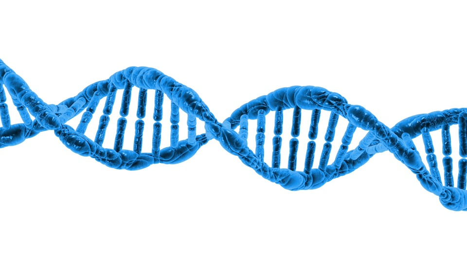
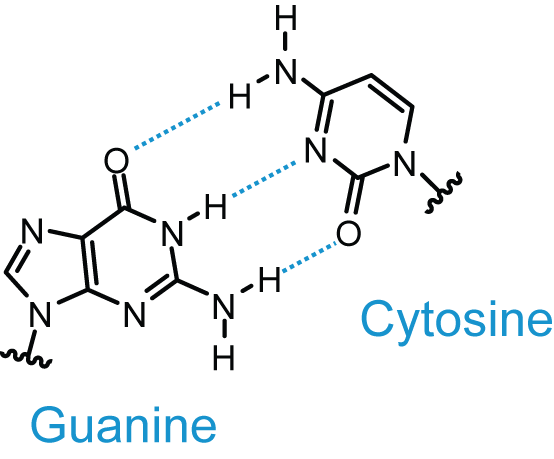
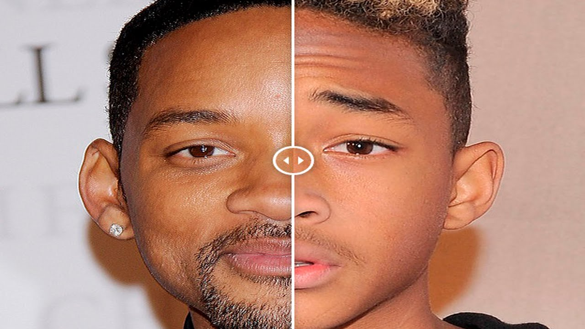
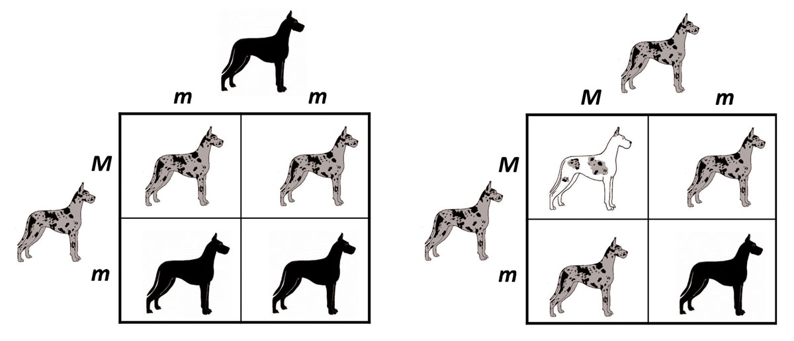

The Basics
Before we dive into the ins & outs of genetics lets define two basic terms we will need to know:
- Cells:
The basic strucutral component of all living organisms.
- Heredity:
Passing on of genetic material from parent to offspring.
Genes & DNA
'Our own genomes carry the story of evolution, written in DNA, the language of molecular genetics, and the narrative is unmistakable.'
- Kenneth R. Miller
DNA (deoxyribonucleic acid) is the hereditary information that is within living organisms that is like a code of instructions that make each orgranism the way it is.
It is because of DNA you have the hair color you do, the height you have, and everything about you inside, and out.

DNA is organized into into individual units called genes, and these contain instructions for the function of every cell, and enzyme in our body.
DNA Structure
The shape of DNA is usually described as a "double helix".
DNA is a nucleic acid, and it consists of individual units called nucleotides, which have three components: a molecule of sugar, a phosphate group, and a nitrogen-containing molecule called a
base.
To picture this double helix one can think of a ladder in which the two veritcal sides are a sugar molecule, and a phosphate group.
The rungs of this ladder are the most imporant part are pairs of bases, one coming from each side of the vertical strands.
There are four bases these base pairs can be comprised of:
- Adenine (A)
- Thymine (T)
- Cytosine (C)
- Guanine (G)
Genome
The full set of DNA present in an individual organism is called its genome. In humans, this information is laid out in long strands of DNA in the nucleus. DNA exists as many smaller, called chromosomes. Humans, for example, have three billion base pairs, divided into 23 unique pieces of DNA. Because we have two copies of each from each parent, we have 46 chromosomes.
A gene is a sequence of bases (or, more precisely, base pairs) in a DNA molecule that carries the information necessary for producing a functional product.
A particular sequence of bases is like a set of directions for a specific trait or for the creation of a protien. The sequence spells out part of the instructions for producing keratin that will form part of a curly strand of hair, or for assembling a chemical that effects your brain chemistry so you may experience depression. Each gene is the instruction set for producing one particular molecule, usually a protein.

Go on to the next section on inheritance to learn how you recieve this genetic material!
How are Genes Inherited?
In this section we will focus on how genetic material is inherited, most specifically when it comes to human.
Each cell in the body contains 23 pairs of chromosomes. One chromosome from each pair is inherited from your mother and one is inherited from your father.
The chromosomes contain the genes you inherit from your parents.
For example, for the gene that determines eye colour, you may inherit a brown-eye gene from your mother and a blue-eye gene from your father.
In this instance, you'll end up with brown eyes because brown is the dominant gene. The different forms of genes for eye colour are caused by changes (mutations) in the DNA code.
The same is true for medical conditions. There may be a faulty version of a gene that results in a medical condition, and a normal version that may not cause health problems.
Whether your child ends up with a medical condition will depend on several factors, including:
- What genes they inherit
- whether the gene for that condition is dominant or recessive
- Their environment, including any preventative treatment they may receive

Alleles & Traits
Within a species, individuals sometimes have slightly different instruction sets for a given protein, and these instructions can result in a different version of the same characteristic. These alternative versions of a gene that code for the same feature are called
alleles, such as different hair colors. Any single characteristic or feature of an organism is referred to as a
trait.
Often people resmemble their parents more than they resemble other random individuals in the population a consequence of the passing of characteristics from parents to offspring through their genes. This is
heredity.
Traits that are determined by the instructions a person carries on one gene are called
single-gene traits.
It is important to note here that most human characteristics are influenced by multiple genes, as well as by the environment.
There is an imporant concerpt that must be understood before moving further, and genetic content brings up the difference between
phenotype, and
genotype.
Genotype is the actual genetic makeup of an organism while the phenotype is the observable traits it expresses due to it's genotype.
Mendellian Inheritance
Gregor Mendel was a pioneer of the idea of genetic inheritance, and bred flowers to develop his theory of inhertiance.
He discovered that if two flowers carried for the trait of purple petals that the offspring would be purple, but sometimes if both parents had purple petals the offspring could end up with white petals.
This led to his discovery of the idea of dominant, and recessive alleles.
Dominant genes will always express themselves over the recessive genes, but it is more complex than that with inheritance.
Organisms may carry only the dominant or recessive gene for a particular trait, this is called homozygous. An organism may also carry both the dominant and recessive gene for a particular trait in which case it is heterozygous. If the one or both parents are heterozygous for a trait there is an element of chance on what trait it will express.
The offspring can recieve any of the four possible combinations of an allele for a trait. To express this graphically Mendel created the punnent square.
Punnet Square

The best way to understand this concept is by example. The image above is of a punnet square for a dog with the possibility of expressing a dominant trait, that of spotted fur, or a recessive trait that of all black fur. It is tradition in punnet squares to represent dominant traits with capital letters, and recessive traits with lower case.
The punnent square shows two parents, and shows whether or not is it heterozygous or homozygous for a certain trait.
In this example the parent on the left in example 1 is heterozygous which is shown by Mm. M being dominant for spotted fur, and lowercase m for all dark fur. The parent on the top is homozygous recessive for all black fur. The combinations of these individual alleles allow for four possible variations of offspring. To determine this you simply take the label for the squares row, and column, and add them together. If the combination includes the dominant allele then the offspring in that squre will express the dominant trait, but if it recieves two recessive alleles then it will express the recessive trait. Each box represents a 25% chance of having a child with that trait. In this example there are two instances of both spotted fur, and dark furred offspring showing their is a 50/50 chance of how the offspring will turn out.
To understand this concept interactively click
here
Now let's move on to the interesting concept of genetic mutation!
Mutation
A gene mutation is a permanent alteration in the DNA sequence that makes up a gene, such that the sequence differs from what is found in most people. Mutations range in size; they can affect anywhere from a single DNA building block (base pair) to a large segment of a chromosome that includes multiple genes. Most mutations are random in nature, and some can be benign, or even beneficial while some cause cause serious health concerns.
Mutations can be hereditary or somatic due to enviormental effects. Most disease-causing gene mutations are uncommon in the general population. However, other genetic changes occur more frequently. Genetic alterations that occur in more than 1 percent of the population are called polymorphisms.
Common forms of genetic mutations include:
- Point Mutatations
- Gene Deletion
- Missing or additonal chromosomes
Point Mutations
Point mutations occur when a single nucleotide in DNA is substituted by another, inserted into a DNA base pair sequence, or deleted from a sequence. For example a sequence AGCT would become AGT or AGCCT. Point mutations have been linked to specific diaseses such as cystic fibrosis, sickle-cell anemia, Tay-Sachs dieases, and color blindness.
People who are colorblind have mutations in their genes that cause a loss of the production of cones in their eye that allow other people to distinguish red, and green.
Gene Deletion
Gene deletion occurs when a part of a chromosome or sequence is lost in the DNA replication process. Large deletions are liely to be fatal, while small deletions can not be very notable, and medium size deletions effect some common diseases and disorders. 2/3 of cases of muscular dystrophy are cause by gene deletions.
Chromosome abnormality
Chromosome mutations occur when a chromosome is missing, contains extra, or has irregular chromsomal DNA. These mutations usually occur when there is an issue in cell divison during sexual reproduction.
Numerical disorders refer to disorders that are caused by missing or additional chromosomes. For instance people with down syndrome have three copies of chromosome 21 rather than two. Turner syndrome is another numerical disorder in which a person in born with only one sex chromosome, that of an X chromosome.
Most chromosomal abnormalities occurs during sexual reproduction, and are not inherted from the parent. They are most often random, and the cure for many chromosomal genetic disorders are not known.
Future of Genetics
Many siginificant developments in biotechnology have occured in the 21st century, and particulary with biotechnology relating to genetics.
Genetic Engineering
Genetic engineering has been around for some time, and has applications in argiculture, manfacturing, medicine, and more. Gene therapy, the gentic engineering of humans., replaces defective genes like the ones in mutations described earlier with effective ones. Clinical research in this area has been studied on several diseases such as likemia, and Parkinsons. The first gene therapy to be treatment to be approved for clinical use was Glybera in 2012. Genetically modified organisms for argiculture are frequently being research to make more cost effective, and healthier production of food.
CRISPR
CRISPR-Cas9(Clusetered regularly interspaced short palindormic repeats) is a recent, exciting, and controversial development in biotechnology.
CRISPIR-Cas9 is a genome editing tool that allows geneticists to edit parts of DNA sequences, by adding, deleting, or altering DNA sequences. An enzyme Cas9 acts as a 'molecular scissor', and a piece of RNA that binds. The technology was inspired by gene editing methods that have been been observed in bacteria. Using this technology scientists can edit, change, and remove genes, and then watch the effects this have in order to better understand the function of that gene. This could help scientists better understand diseases like cancer, and hepatitis. The ethical implications of this technology have cause a significant stir in the media.
This marks the end of our journey through the world of genetics, click the link
here to find more exciting places to learn about genetics.